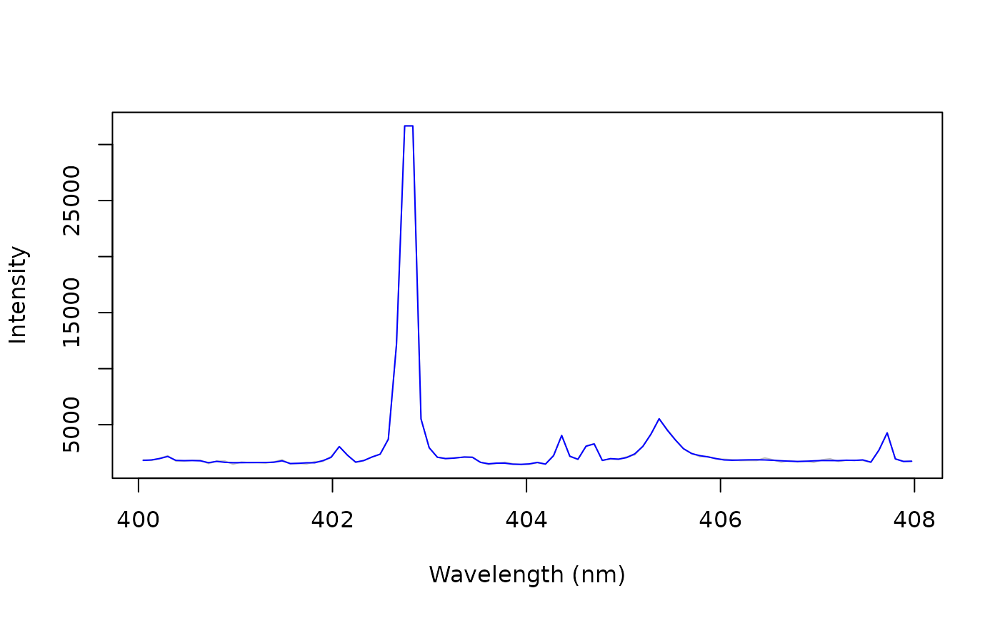

Removes noise from spectra by thresholding their undecimated wavelet coefficients (translation-invariant wavelet shrinkage). Unlike a smoothing filter, it keeps the height and width of narrow lines.
Usage
wavelet_denoise(
x,
wavelet = "la8",
level = 2,
threshold = "sure",
rule = "hard",
segments = TRUE
)Arguments
- x
A numeric matrix or data frame of spectra, one per row, or a numeric vector (one spectrum). Their names are the wavelengths.
- wavelet
The wavelet:
"la8"(default; Daubechies' least asymmetric wavelet with 8 coefficients, whose nearly symmetric shape suits spectral lines),"haar","d4","d6"or"d8"(seewavelet_features()).- level
The number of levels thresholded. Default is 2: the scales of 2 to 4 channels.
- threshold
The threshold:
"sure"(default) or"universal".- rule
The thresholding rule:
"hard"(default) or"soft".- segments
A logical: denoise the segments between gaps of the wavelength axis separately (
TRUE, default). Needs wavelengths as names.
Details
The spectrum is decomposed by the maximal overlap discrete wavelet
transform (MODWT, Percival and Walden, 2000), the undecimated version of
the transform of wavelet_features(): every level has one detail
coefficient per channel. The details of the levels 1 to level are
thresholded, and the spectrum is rebuilt from them and the smooth part at
level, which keeps the continuum and the broad features. Thresholding
the undecimated transform is the translation-invariant denoising of
Coifman and Donoho (1995), the average of the denoised decimated
transforms of all the shifts of the spectrum: unlike thresholding the
decimated transform, it gives no artifacts that depend on where a line
falls on the channel grid.
The noise \(\sigma_j\) of each level \(j\) is estimated in each spectrum as the median absolute detail of that level divided by 0.6745, which allows for noise correlated between neighboring channels (Johnstone and Silverman, 1997). The median is not affected by the lines as long as they cover less than half of the channels. The threshold of a level is
threshold = "sure"(default): the SureShrink threshold, which minimizes Stein's unbiased estimate of the risk of soft thresholding at that level, or the universal threshold when the details of the level are sparse (Donoho and Johnstone, 1995). The undecimated details are correlated, so the risk estimate is approximate;threshold = "universal": \(\sigma_j \sqrt{2 \log n}\) for \(n\) channels (Donoho and Johnstone, 1994), about 4.2 times the noise for 7000 channels. It removes nearly all the noise, but also the weak lines.
With rule = "hard" (default), the details above the threshold are kept
unchanged, so the lines keep their height. With rule = "soft", they are
shrunk by the threshold: a smoother result, but lower lines.
The default settings suit spectra whose lines are a few channels wide. In
the single shots of forageShots, whose lines are 2 to 3 channels wide
(FWHM), the noise is correlated between neighboring channels: more than
half of it is at level 2, the scale of the lines. Compared with the mean
of the other shots of each sample, the defaults lowered the error of the
continuum by about 10%, while the lines 3 to 15 times higher than the
noise lost about 4% of their height and the strong lines 0.2%; the
universal threshold lowered the weak lines by a third. A Savitzky-Golay
filter of 5 channels (savitzky_golay()) lowered the strong lines by
10%. Because the noise has the scale of the lines, no filter separates
them well in such spectra, and the PLS calibrations of the averaged
spectra of forageLIBS hardly change after denoising. Spectra with
wider lines and noise at finer scales gain more, with a higher level.
The ends of the spectrum are extended by reflection. With segments = TRUE, the spectrum is split between the detectors of a multi-spectrometer
system, as in savitzky_golay(), and each segment is denoised on its
own. A segment shorter than the wavelet filter at level,
\((2^{level} - 1)(L - 1) + 1\) channels for a filter of \(L\)
coefficients, is denoised with fewer levels, and a segment shorter than
the filter itself is returned unchanged. A segment with missing values is
returned unchanged, with a warning.
The threshold follows the typical noise of a spectrum, mostly that of the
continuum. In LIBS, the noise grows with the intensity, so the noise on
top of strong lines is mostly kept, and weak lines whose details do not
exceed the threshold are removed with the noise. Denoising lowers the
apparent noise of blank spectra: compute detection limits (as with
calibration_curve()) from the spectra before denoising.
References
Donoho, D.L., Johnstone, I.M. (1994). Ideal spatial adaptation by wavelet shrinkage. Biometrika, 81(3):425-455.
Donoho, D.L., Johnstone, I.M. (1995). Adapting to unknown smoothness via wavelet shrinkage. Journal of the American Statistical Association, 90(432):1200-1224.
Coifman, R.R., Donoho, D.L. (1995). Translation-invariant de-noising. In: Antoniadis, A., Oppenheim, G. (eds), Wavelets and Statistics. Lecture Notes in Statistics, 103:125-150. Springer, New York.
Johnstone, I.M., Silverman, B.W. (1997). Wavelet threshold estimators for data with correlated noise. Journal of the Royal Statistical Society: Series B, 59(2):319-351.
Percival, D.B., Walden, A.T. (2000). Wavelet Methods for Time Series Analysis. Cambridge University Press, Cambridge.
Examples
data(forageShots)
# one laser shot, around the Mn I triplet at 403 nm
shot <- unlist(forageShots[1, -(1:5)])
clean <- wavelet_denoise(shot)
wl <- as.numeric(names(shot))
keep <- wl > 400 & wl < 408
plot(wl[keep], shot[keep], type = "l", col = "grey", xlab = "Wavelength (nm)",
ylab = "Intensity")
lines(wl[keep], clean[keep], col = "blue")
